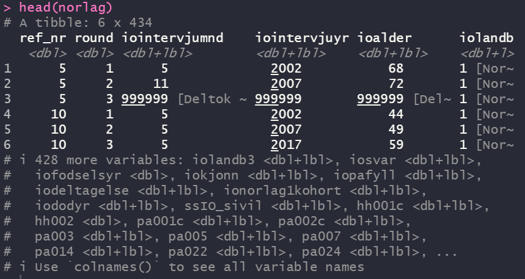

class(norlag)[1] "data.frame"Hvis man jobber med større spørreskjemaundersøkelser kan det være svært mange variable i datasettet, kanskje hundrevis, og det er vanskelig å ha en oversikt over datasettet. Bare det å finne riktig variabel kan være en utfordring. NorLAG er et eksempel på et slikt datasett. Det vil normalt følge med et dokumentasjonsnotat eller -rapport med oversikt over alle variable. Ofte til det være mest hensiktsmessig å slå opp i denne, men vi kan også ha behov for å se nærmere på dataene i R. En første ting man bør sjekke er om dataene er lest inn riktig og at det rett og slett ser greit ut.
I det følgende er utgangspunktet at man har lest inn hele datasettet og lagret det i et objekt med navn norlag.
Det første man bør sjekke er jo om innlesning av datasettet ble riktig. Skjer det noe feil her, så blir selvsagt alt annet feil. Men det er lite som kan gå galt når man leser inn fra datasett. Et unntak er csv-filer som ikke har metadata inkludert.
Funksjonen class() gir informasjon om hva slags objekt man har. Altså: etter at man har lest inn dataene og lagt det i et objekt. Her sjekkes objektet norlag:
I dette tilfellet får vi tre beskjeder. Det er en kombinert objekttype av tibble og data.frame. Mens data.frame er standard datasett tilsvarende som et regneark, så er tibble en utvidelse med noen ekstra funksjoner som er nyttige for avanserte brukere, men er å regne som en utvidelse av data.frame. For vårt formål vil det i praksis være det samme. Et datasett som leses inn i R bør altså være av typen tbl eller data.frame. Data kan også ha andre typer strukturer og da vil class() rapportere noe annet.
Når man bruker funksjoner i R, så vil noen ganger resultatet avhenge av hva slags type objekt det er.
For å vite hvor mange rader og kolonner det er i datasettet kan man bruke funksjonen dim() slik:
Her får vi vite at det er 20892 rader (dvs. observasjoner) og 2605 kollonner (dvs. variable).
View()Særlig når man er uvant med å jobbe i R vil man kunne ha behov for å se på dataene slik man er vant til fra regneark eller software som SPSS eller Stata. En mulighet er å bruke funksjonen View() så vil hele datafilen åpnes i eget vindu. Dette er kun egnet for å se på dataene og du kan lukke vinduet uten at det påvirker dataene. Dataene ligger fremdeles i det samme objektet på samme måte som før.
Hvis variablene ser ut til å ha forventede variabelnavn og verdier, så er det antakeligvis ok.
Et slikt datasett tar imidlertid stor plass og det er vanligvis mer hensiktsmessige måter å se på dataene på som også gir mer informasjon. I R er det ikke meningen at du skal “sitte og se på dataene” på den måten mens man jobber. Men ta gjerne en titt for å få et bedre inntrykk av hvordan dataene ser ut.
Du kan lukke det vinduet med dataene uten at det har noe å si for dataene, som fremdeles er tilgjengelig i minnet på datamaskinen på samme måte som før.
head()Funksjonen head() skriver de første 6 observasjonenen til konsollen i Rstudio. Det gir et første inntrykk av datasettet med variabelnavn og de første verdiene uten å åpne hele datasettet. Hva som faktisk vises vil avhenge av hvor stor skjerm du har, men R vil bare vise de første variablene etter hva som er plass til på skjermen din. For datasett med mer enn noen få variable er ikke dette veldig nyttig, men noen ganger har man små datasett. Med en liten skjerm kan dette da se omtrent slik ut:

Legg merke til at under hvert variabelnavn er det en indikasjon på hva slags variabeltype det er. For eksempel betyr <dbl> at det er en numerisk variabel mens <dbl+lbl> indikerer at variabelen inneholder labels.
Det er lite hensiktsmessig å vise alt i konsollen fordi det rett og slett ikke er plass. Nerst står det derfor angitt at det er flere variable som ikke vises og navnet på de første av disse.
En enkel løsning er å bare se på noen få variable om gangen. Med klammeparentes kan vi angi hvilke radnummer og kolonnenummer vi ønsker se på med følgende syntax: datasett[rader, kolonner] der altså komma skiller mellom rader og kolonner. Følgende eksempel viser hvordan man kan bruke head() for å vise de første observasjonene i datasettet med bare de første 5 variablene (altså: kollonne nr 1-5).
ref_nr iodeltakelse iododaar iofodselsaar iokjonn
1 5 Deltatt T1 og T2 <NA> 1934 Mann
2 5 Deltatt T1 og T2 <NA> 1934 Mann
3 10 Deltatt T1, T2 og T3 <NA> 1957 Kvinne
4 10 Deltatt T1, T2 og T3 <NA> 1957 Kvinne
5 10 Deltatt T1, T2 og T3 <NA> 1957 Kvinne
6 12 Deltatt T1 og T3 <NA> 1955 KvinneVi kan altså også angi både rader og kollonner på denne måten. Her er eksempel som viser første 3 rader og variabelnummer 40 til 44.
hc201 hc202 hc203 hc204 hc205
1 176 85 Ja Nei Ja
2 176 95 Ja Nei Ja
3 168 64 Ja Nei JaLegg merke til at under hvert variabelnavn står det en liten tekst, f.eks.
Vi skal primært jobbe med data som ikke er “labelled”, men du vil noen ganger komme borti dette, spesielt hvis du importerer data fra andre statistikksoftware.
I tidligere kurs skal dere ha lært å bruke funksjonen glimpse(), men også her blir det mest rotete fordi det er så mange variable. Det tar rett og slett veldig stor plass på skjermen.
En variant er å bruke glimpse() bare på et utvalg variable på tilsvarende måte. Her er et eksempel, men der vi ser på de 20 første variablene ved bruk av klammeparentes tilsvarende som vist over.
Rows: 20,892
Columns: 20
$ ref_nr <dbl> 5, 5, 10, 10, 10, 12, 12, 15, 15, 18, 18, 22, 23, 23, …
$ iodeltakelse <fct> "Deltatt T1 og T2", "Deltatt T1 og T2", "Deltatt T1, T…
$ iododaar <fct> NA, NA, NA, NA, NA, NA, NA, NA, NA, NA, NA, 2006, NA, …
$ iofodselsaar <dbl> 1934, 1934, 1957, 1957, 1957, 1955, 1955, 1944, 1944, …
$ iokjonn <fct> Mann, Mann, Kvinne, Kvinne, Kvinne, Kvinne, Kvinne, Kv…
$ ionorlag1kohort <fct> Del av NorLAG1 kohort, Del av NorLAG1 kohort, Del av N…
$ iopafyll <fct> Ingen påfyll, Ingen påfyll, Ingen påfyll, Ingen påfyll…
$ iovektnorlag2 <fct> 143, 143, 51, 51, 51, NA, NA, 195, 195, 215, 215, NA, …
$ iovektnorlag3 <fct> NA, NA, 73, 73, 73, 135, 135, NA, NA, 227, 227, NA, 39…
$ pr002c <fct> 1905, 1905, 1933, 1933, 1933, 1918, 1918, 1918, 1918, …
$ pr003c <fct> 1991, 1991, NA, NA, NA, 2004, 2004, 1989, 1989, NA, NA…
$ pr005c <fct> 1905, 1905, 1933, 1933, 1933, 1915, 1915, 1909, 1909, …
$ pr006c <fct> 1996, 1996, NA, NA, NA, 1996, 1996, 1975, 1975, 1976, …
$ pr007c <fct> Grunnskole, Grunnskole, Videregående, Videregående, Vi…
$ pr011c <fct> Videregående, Videregående, Grunnskole, Grunnskole, Gr…
$ round <dbl> 1, 2, 3, 2, 1, 3, 1, 1, 2, 3, 2, 1, 3, 1, 1, 3, 2, 1, …
$ ioalder <fct> 68, 72, 59, 49, 44, 61, 47, 58, 63, 67, 57, 63, 69, 55…
$ iointervjumnd <fct> 5, 11, 5, 5, 5, 8, 5, 8, 3, 3, 5, 8, 5, 8, 2, 5, 9, 4,…
$ iointervjuaar <fct> 2002, 2007, 2017, 2007, 2002, 2017, 2002, 2002, 2007, …
$ iolandb <fct> NA, Norskfødt, NA, Norskfødt, NA, NA, NA, NA, Norskfød…I denne output’en er den første kollonnen altså variabelnavnene, deretter er det en kollonne som viser hva slags type variabel det er, og deretter de første observasjonene på hver variabel slik at man får et inntrykk av hvordan det ser ut. glimpse() gir altså omtrent samme informasjon som head(), men er nok mer hensiktsmessig hvis mange variable.
codebook() fra pakken {memisc}Noen ganger vil man ha litt mer informasjon om enkeltvariablene. Noen datasett vil komme med labler (omtalt annet sted) eller faktorvariable, som gjør at variablene inneholder både tallverdier og tekst.
Å få ut noe deskriptiv statistikk og se på fordelinger er da gjerne neste steg som vil bli behandlet i de etterfølgende kapitlene.
Man vil klare seg greit med det vi har vist ovenfor. Men det finnes flere måter å gjøre det på. Pakken {memisc} inneholder en rekke funksjoner for å håndtere surveydata, som vi ikke skal gå nærmere inn på her. Men akkurat funksjonen codebook() gir litt mer informativt output enn look_for().
For å bruke denne må du installere pakken først. I eksempelet nedenfor er pakken ikke lastet med library(), men angitt pakken direkte med memisc:: først. Dette kan være nyttig hvis man ikke skal bruke noen andre funksjoner fra denne pakken.
================================================================================
norlag$iokjonn 'IOs kjønn'
--------------------------------------------------------------------------------
Storage mode: integer
Factor with 2 levels
Levels and labels N Valid
1 'Mann' 10244 49.0
2 'Kvinne' 10648 51.0Poenget her er altså bare å få en penere output og litt deskriptiv statistikk samtidig.
For å se nærmere på en variabel går an å bruke funksjonen look_for(), som primært er en søke-funksjon, men det gir også informasjon om variabelen.
pos variable label col_type missing values
5 iokjonn IOs kjønn fct 0 Mann
KvinneI output fremgår det at dette er den 10’ende variabelen, inneholder informasjonen “IOs kjønn”, er av typen numerisk med tilhørende labler, og verdiene er 1 = Mann og 2 = Kvinne.
Det går også an å bare få ut variabel-label med funksjonen var_label() slik:
For å se labels på verdiene bruk val_labels().
Alle datasett skal komme med en dokumentasjon som sier hva hver variabel inneholder og hvilke verdier som finnes i hver variable, og hva de betyr. Dette leveres gjerne som en separat fil, ganske ofte i pdf eller html format. NSD/Sikt leverer dokumentasjonen for Norlag i html-format. (Ideelt burde det vært i et enkelt maskinlesbart format egnet til å bruke til omkoding og labler for de som ønsker det, men de har valgt en annen løsning).
Du kan søke i dokumentasjonen på samme måte som i andre filer, men det kan være litt knotete. Et godt alternativ er å søke direkte i datasettet. Funksjonen look_for() søker både i variabelnavn, verdier og labler. Her er et eksempel for hvordan finne variabler som inneholder ordet “yrkesinntekt”. Du kan også søke på kortere eller lengre tekststrenger. (Søker du f.eks. bare på “innt” eller “yrke” så får du opp langt flere variable, så du må kanskje prøve deg litt frem).
Det er to variable som inneholder teksten “yrkesinntekt”. Den første variabelen har posisjon 353 i datasettet og har variabelnavnet inwyrkinnt. Den andre variabelen har posisjon 371 og har navnet inpartwyrkinnt. Vi fokuserer på den første.
Merk at når labelen avsluttes med ~ (uttales “tilde”) indikerer det at teksten er avkortet i outputvinduet. Du får opp hele teksten ved å bruke val_label() slik: